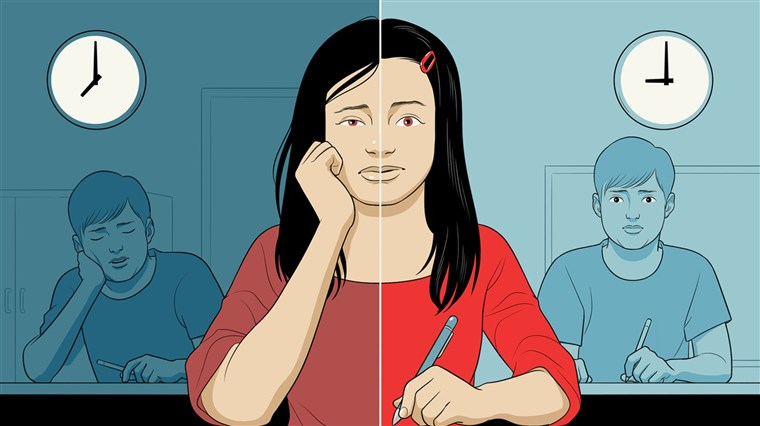

Delayed School Start Times Result In Improved Sleep, Health, and Academics
There have been numerous studies demonstrating this claim
Peabody Award winner, and NPR health contributor, Patti Neighmond, reported that a few years ago, Seattle delayed their school start times by an hour, beginning school at 8:45. She says that although the initial implementation proved challenging, adolescents affected by the change were able to get more sleep (Neighmond).
Full NPR Report
The Seattle study is far from an outlier. The systematic review of school start time research compiled by Minges and Redeker revealed similar results (Minges and Redeker 87). Their study began with 1035 articles, with Minges and Redeker gradually eliminating argues based on criteria that did not meet their criteria or were “duplicates” (Minges and Redeker). When their systematic review concluded, Minges and Redeker reported that "There was a significant positive net change in all studies, indicating an increase in the total minutes of sleep"(87). Moreover, they found that this change was significant, writing that "The net increase ranged from an additional 25 minutes to 77 minutes of sleep per weeknight"(Minges and Redeker 87). By combining the results of so many studies Minges and Redeker reinforce the idea that delayed school start times result in adolescents receiving significantly more sleep each school night.
In addition to connecting school start times with improved sleep Minges and Redeker were able to establish a trend in their studies that showed “decreases in the depression scale, depressed mood score, and proportion of students who were irritated or annoyed” (93). The academic effects of delayed school start times have also been studied. In a study conducted by Jeffrey Groen and Sabrina Pabilonia from the US Bureau of Labor Statistics, they claimed that "We find that an extra hour of sleep on a weekday leads to a 0.36 standard deviation increase in the broad reading test score for female students. Overall, these results imply that the female students who are getting more sleep when schools start later are the ones who benefit in terms of higher test scores (Groen and Pablionia 214).
Delayed Start Times Can...
- Improve Sleep
- Improve Test Scores
- Improve Alertness in School
- Precent Depression
- Improve Mood
The evidence linking delayed school start times to academic achievement should be the impetus for parents to make sure their children utilize their delayed school start times to sleep in.
Argument
"While the health and academics of my child may be important, delayed school start times will negativly affect their after school responsibilities."
Counterargument
Minges and Redeker determined that after-school activities were not affected by the delayed school start time (Minges and Redeker 93). Moreover, Groen and Pablionia concluded that “With later start times, students are not any more or less likely to hold a job or spend time at work” (215). For many students who rely heavily on their jobs, being mindful of their commonly hectic work schedule is certainly apropos. These results show that a delayed school start time does not affect a student's job, supporting the claim that it is possible to have a delayed school start time without severely compromising a student's work schedule.
Groen and Pablionia’s study also found that when delayed school start times were implemented, female students increased the amount of time they dedicated to sports after school, running counterintuitive to the suggestion that delayed school start times negatively affect after school activities (213).